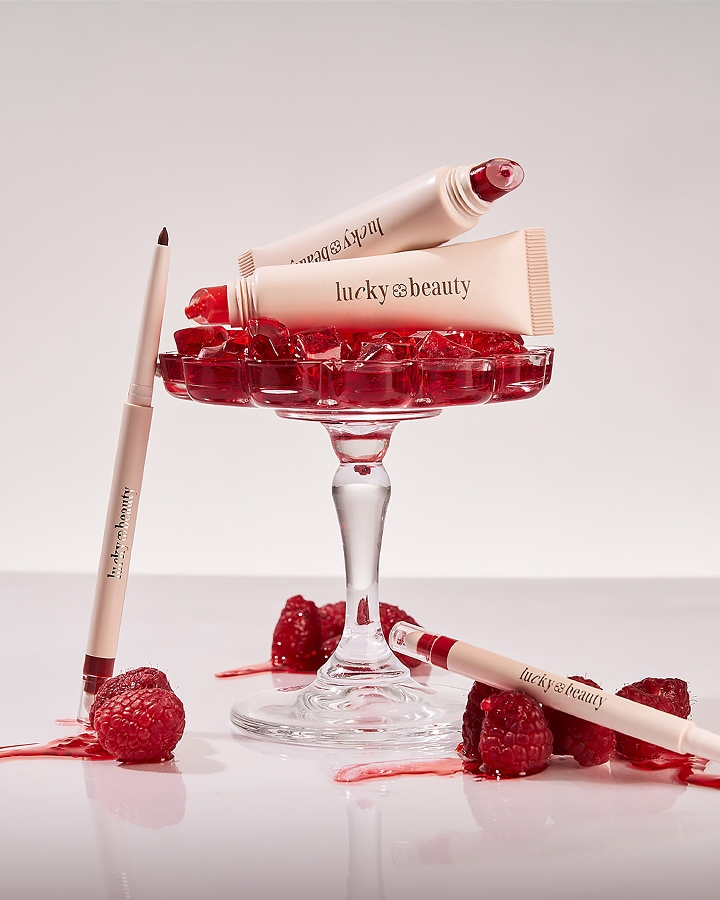

Technology
Exploring programming, system development, and practical software solutions through my IT studies.
THIRD-YEAR IT STUDENT • CREATIVE THINKER
Hi, I'm Arriane — an IT student who loves combining technology, design, and creativity. From exploring programming with C and Java to building academic systems, designing user-friendly interfaces, organizing information, and expressing ideas through writing, I'm continuously learning how technology can create meaningful experiences.
About Me
I am Arriane Antioquia Manalo, a third-year Information Technology student at Central Bicol State University of Agriculture in Sipocot, Philippines. My interests span UI/UX design, programming, system development, data entry, and creative writing. I enjoy learning how thoughtful design and practical technology can support real people, solve problems, and communicate ideas clearly.
Through academic projects, I have grown in areas such as C and Java programming, academic system development, organizing information, and creating user-friendly digital experiences. I am especially interested in combining technology with creativity, whether I am building systems, designing interfaces, or crafting meaningful writing.
I value continuous learning, attention to detail, and thoughtful communication. I want my portfolio to reflect not only my technical foundation but also my ability to think, design, and connect ideas in ways that are useful and human-centered.
Exploring programming, system development, and practical software solutions through my IT studies.
Interested in creating intuitive, accessible, and visually engaging digital experiences through UI/UX design.
Combining organized thinking and creative writing to communicate ideas clearly and meaningfully.
Projects & Systems

Open project previewA beauty brand website project for Lucky Beauty. The supplied archive includes HTML, a stylesheet, font files, images, and PDF documentation.
A console-based C project that recommends songs for a user's mood, with a library of 400+ songs across nine mood categories.
A digital system developed to support the organization and management of scholarship-related information within a barangay.
Programming & Technical Skills
Data & Organization
| Entry | Category | Status | Notes |
|---|---|---|---|
| Project update | Academic | In progress | Needs final review |
| Design reference | UI/UX | Reviewed | Color palette approved |
| Writing sample | Content | Draft | Polish headline and structure |
Words, Thoughts & Stories
I enjoy creative writing, articles and essays, and content writing. I use writing to shape ideas, communicate clearly, and connect with readers in a thoughtful way.
My Journey So Far
Central Bicol State University of Agriculture, Sipocot, Philippines
Building a strong foundation in technology, systems, and application design while continuing to learn through academic work and self-directed exploration.
Worked on projects involving logic, functionality, and structured problem-solving in C and Java. These experiences strengthened my understanding of programming fundamentals and project planning.
I am interested in user interface and experience design, including layout, visual hierarchy, color, and typography, and continue to build my knowledge in these areas.
Continuously developing my ability to write clearly, organize ideas, and express thoughts with intention through creative and informative work.
Let's Connect
I'm always open to learning, exchanging ideas, exploring creative projects, and connecting with people who appreciate thoughtful design and technology.